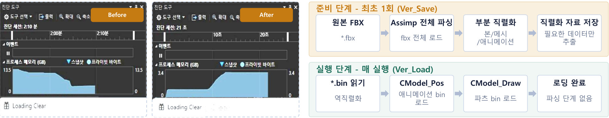

CASE 01
모델 로딩에 실행마다 약 2분이 걸리던 문제
2분 → 20초
문제
Assimp로 원본 모델을 직접 로드할 때 실행마다 약 2분이 걸렸고, 모델이 복잡할수록 초기 로딩이 크게 늘었습니다.
원인
원본 파일 전체를 파싱해야 했고, 애니메이션/본/메시 데이터를 매 실행 초기화 단계에서 다시 처리하고 있었습니다.
선택
비동기 로딩은 체감만 개선하고 반복 테스트 비용은 그대로입니다. 준비 비용을 최초 1회로 옮기는 직렬화를 택했습니다.
구현
런타임에 필요한 메시/본/애니메이션만 추출해 별도 포맷으로 저장하고, 실행 시에는 역직렬화만 수행하도록 준비 단계와 실행 단계를 분리했습니다.
검증
동일 조건에서 반복 측정한 결과 로딩이 약 2분에서 20초 이하로 줄었고, 반복 테스트와 디버깅 주기가 짧아졌습니다.
남은 한계
원본 모델이 바뀌면 다시 직렬화해야 하는데, 변경 감지와 자동 갱신까지는 넣지 못해 수동으로 처리했습니다.